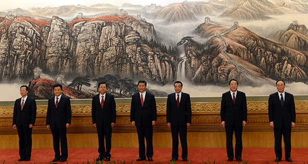
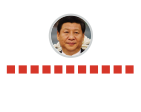
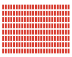
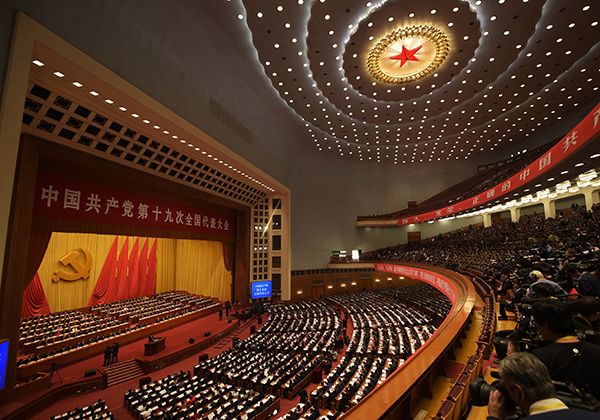

Structure of the Communist Party of China
The son of revolutionary hero Xi Zhongxun, he was born in Beijing in 1953 into privilege. A so-called "princeling" who reaped the benefits of his father's acclaim.
Launched a much-publicised drive against corruption after coming to power in 2012. Considered a "charismatic" strongman, he oversaw a tightening of press restrictions and a crackdown on human rights defenders.
The most important decision making body.
November 15, 2012 (L-R): Zhang Gaoli, Liu Yunshan, Zhang Dejiang, Xi Jinping, Li Keqiang, Yu Zhengsheng and Wang Qishan/ AFP PHOTO / MARK RALSTON
Oversees the Communist Party.
Members usually simultaneously hold state positions.
Controls the armed forces

Elects the General Secretary, politburo, politburo standing committee and the Central Miliary Commission
Meets once every 5 years to elect the Central Committee
*India's BJP boasts similar membership numbers